WORK・生活服務
以財政部發票兌獎 App 為題，透過現有架構盤點、競品與類設計比較、用戶族群設定，於 7 天內產出 4 款首頁架構與 4 款視覺風格提案，並針對社群互動、對獎流程、發票存摺頁面提出具體優化方向。
合作對象
遊戲橘子 Gamania
專案時間
2022
專案類型
App
負責內容
設計策略、UI設計
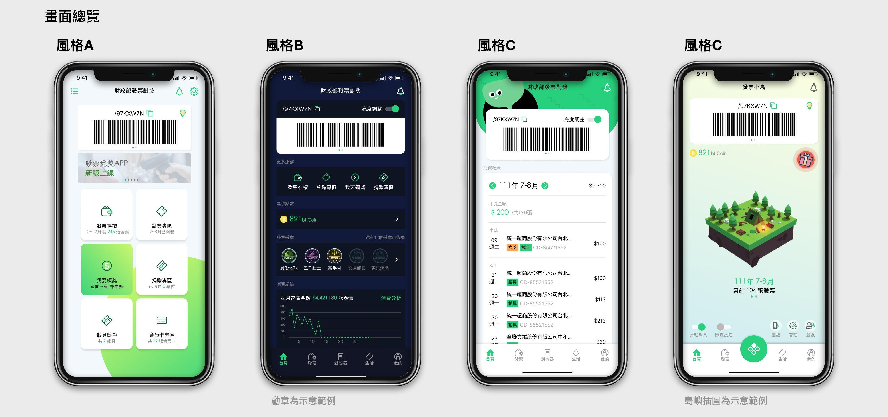
四款視覺風格提案總覽，分別對應工具型、平台型、工具型與遊戲型四種首頁架構方向。
成果與結論
在 7 天的快速提案時程內（估工 42 小時），從現有產品的架構盤點與用戶研究出發，收斂出 4 款首頁架構、4 款視覺風格提案，並針對社群互動、對獎流程、發票存摺頁面提出 3 項具體優化方向。
天
完整提案時程
款
首頁架構提案
款
視覺風格提案
項
流程優化方案
＊本提案為 7 天快速設計練習，聚焦架構梳理與視覺風格方向探索，尚未經真實用戶測試驗證。
本專案重點
財政部發票兌獎 App 顯示儲存在各載具中的雲端發票，具備線上對獎、快速對獎等功能，也能設定獎金的入帳帳戶，完成中獎即入帳的體驗。本提案在此基礎上訂立兩項目標：提供發票收納，協助用戶建立習慣、提升 App 開啟率；以及加入社群功能，讓蒐集發票這件事更有互動與分享的意義。
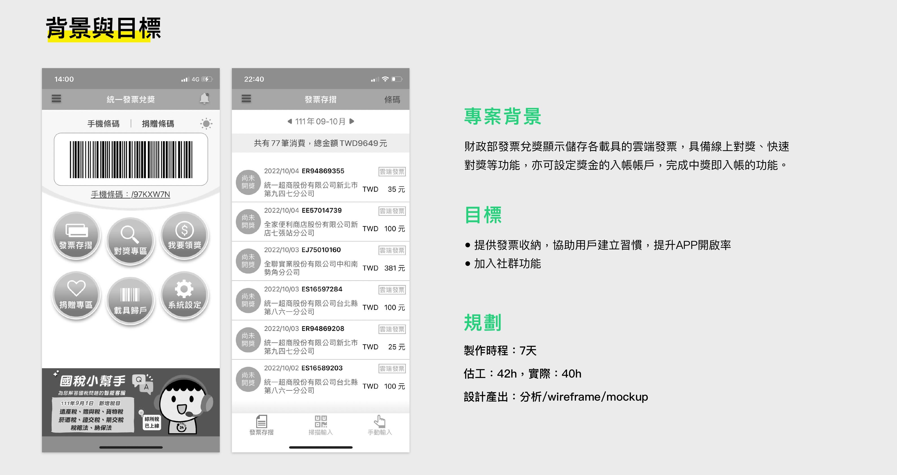
現有 App 的手機條碼頁與發票存摺列表頁，是本次提案盤點的起點。
時程安排
提案時程僅 8 天，因此將現況盤點與研究蒐集集中於前段，把架構整理、wireframe 與色彩計畫的決策提前，讓後段能有充足時間完成 mockup 製作與簡報整理。
| 階段 | 工作項目 |
|---|---|
| D1 | 收到題目／基本資料研究／文獻、參考資料蒐集 |
| D2 | 簡報規劃／視覺風格蒐集／目標用戶設定 |
| D3 | 架構整理／簡報預排 |
| D4 | wireframe 規劃／訂定色彩計畫 |
| D5 | 上機 wireframe／mockup 製作 |
| D6 | mockup 製作／簡報調整 |
| D7 | 簡報製作／Figma 交付檔案整理 |
| D8 | 交付檔案 |
本專案設計流程
本專案為 7 天快速設計提案，從現有產品的架構盤點與實際操作出發，交叉比對競品亮點與市場問卷數據收斂用戶輪廓，訂立優化目標後，同步展開首頁架構與流程優化的方案發想，最終延伸出對應的視覺風格提案。
拆解現有 App 的資訊架構，透過實際操作盤點出六大體驗問題方向。
蒐集競品亮點與類設計比較，交叉比對問卷數據，收斂三組目標用戶輪廓。
定義發票收納習慣養成與社群加值兩大目標，收斂為三大優化方向。
提出 4 款首頁架構 wireframe，並同步展開社群、對獎、存摺頁面的流程優化。
依意象關鍵字發展 4 款視覺風格，完成畫面總覽並整理交付檔案。
現有產品架構與體驗盤點
藉由現有文件梳理產品架構，並透過實際操作盤點功能與體驗的用戶問題，梳理出操作便利、介面理解、介面一致、避免錯誤、簡易學習、操作引導六點優化方向，共同作為後續架構與流程優化的判斷依據。
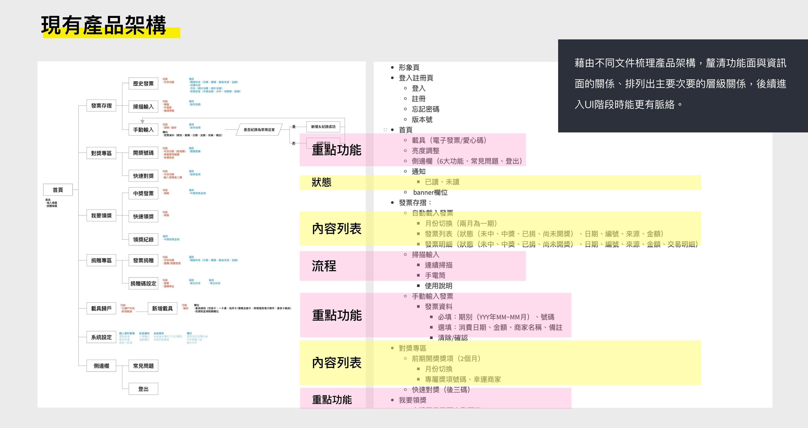
現有產品的完整資訊架構，並標註出重點功能、狀態、內容列表與流程等關鍵區塊。
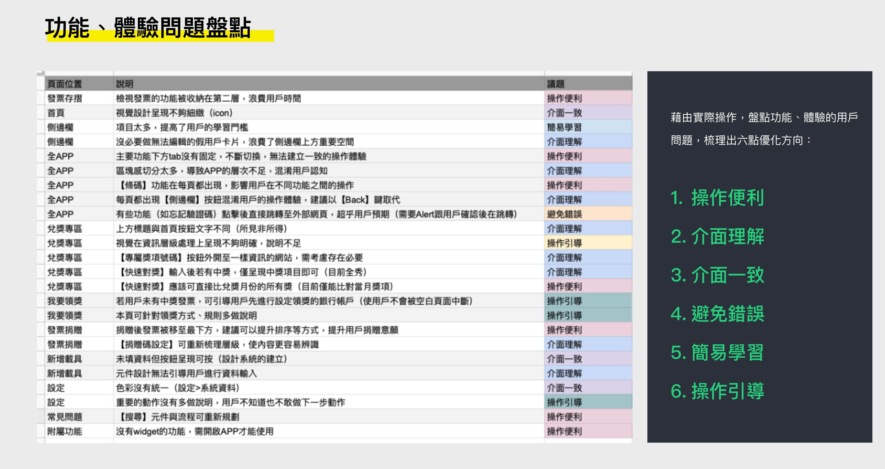
逐頁盤點現有 App 的功能與體驗問題，並依議題分類標註對應的優化方向。
首頁、發票存摺、對獎專區、我要領獎、捐贈專區、系統設定皆從首頁展開，構成現有產品的主要骨架，也是逐頁盤點問題的範圍依據。
將實際操作發現的問題依六大方向分類標註，讓架構與流程優化有明確的判斷依據。
探索可能性－競品相關亮點
參考四款發票／記帳相關產品的差異化亮點，作為後續架構與功能發想的靈感來源。
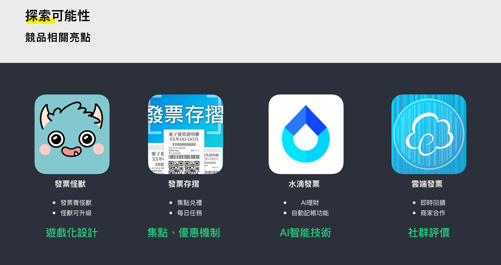
發票怪獸主打遊戲化設計、發票存摺主打集點與優惠機制、水滴發票主打 AI 智能技術、雲端發票主打社群評價。
遊戲化設計，發票養怪獸、怪獸可升級。
集點、優惠機制，集點兌禮、每日任務。
AI 智能技術，AI 理財、自動記帳功能。
社群評價，即時回饋、商家合作。
類設計比較－功能相似的產品
藉由 Barcode 類與列表呈現類的參考產品，探索現行風格趨勢、功能編排與視覺設計的可能性。
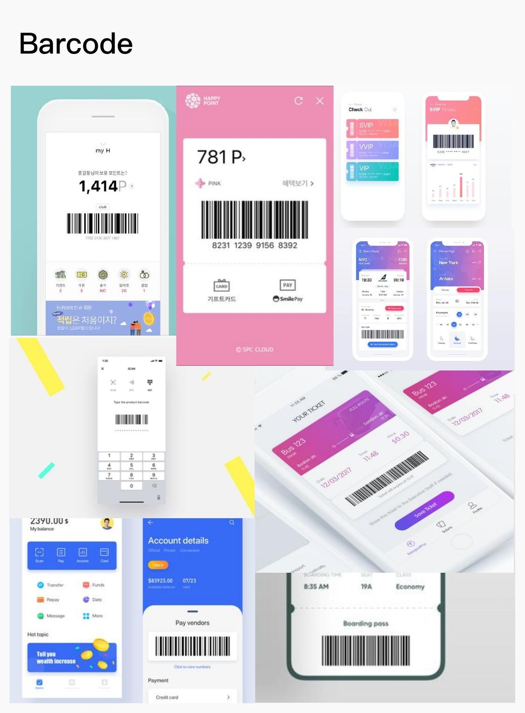
Barcode 類參考產品，聚焦條碼／點數卡的呈現方式。
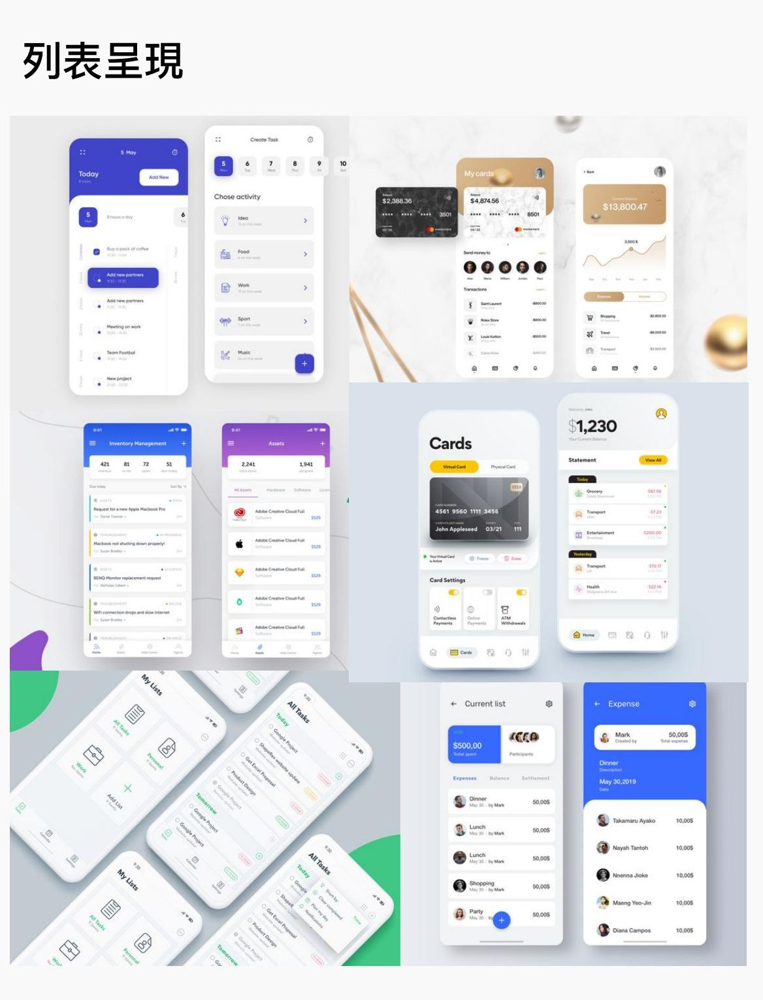
列表呈現類參考產品，聚焦資料列表與卡片式編排。
兩類參考產品共同作為視覺發展的靈感基礎，預期本次 App 將以「簡潔、輕快」與「專業、現代」兩大方向發展視覺。
目標用戶設定
根據財政資訊中心與互動網的資料，雲端帳戶用戶年齡層介於 18 歲到 55 歲之間。由於題目未設定具體用戶，提案中參考問卷數據，設定三類具消費潛力、對數位產品較熟悉的族群，並分別標記出各自的產品調性座標（感性／理性、專業／休閒），作為後續風格提案的依據。
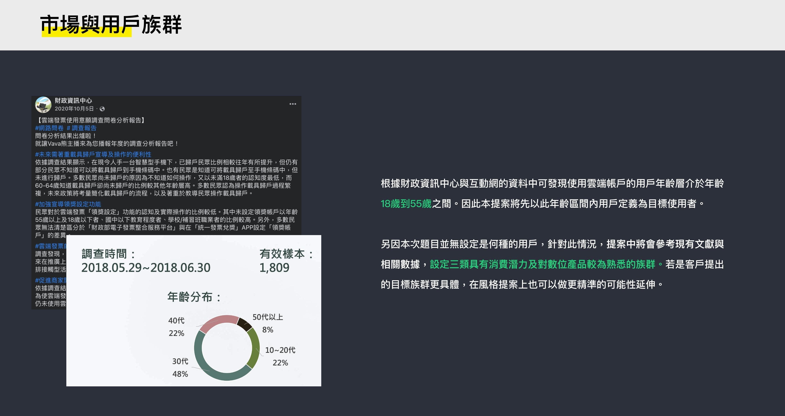
調查期間 2018.05.29～2018.06.30，有效樣本 1,809 份，30 代用戶占比最高達 48%。
省錢、關心環保、喜愛可愛小物
偶而健忘、關心新事物、追求效率
舒壓、療癒、屬於自己的小時光
訂立目標
綜合現有問題盤點與用戶輪廓，收斂為兩項核心目標——協助用戶建立發票收納習慣，並藉由社群功能提升黏著度與互動誘因。
為落實上述目標，後續具體展開為 5 個方案
提出 4 款首頁架構取向，決定資訊優先層級。
發展 4 款視覺風格，定調品牌調性與色彩計畫。
提供三種與社群功能產生連結的方式。
重新梳理後三碼對獎的資訊架構與流程。
重新梳理資訊結構，新增消費分析功能。
以「將重要資訊提至首頁、用戶不需點擊即可獲得資訊」為共同前提，提出四款首頁架構取向：工具型、平台型、工具型（記帳導向）與遊戲型，各自對應不同的開發成本與體驗投入程度。
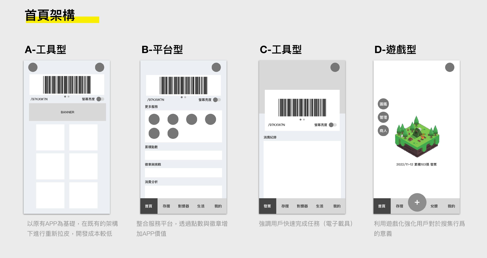
四款首頁架構總覽，由左至右依序為 A 工具型、B 平台型、C 工具型（記帳導向）、D 遊戲型。
A・工具型
以原有 App 為基礎，在既有架構下重新拉皮，降低開發成本，並保留前一版的使用邏輯。強調將各服務最重要的資訊在首頁呈現，用戶不需點擊即可獲得資訊。
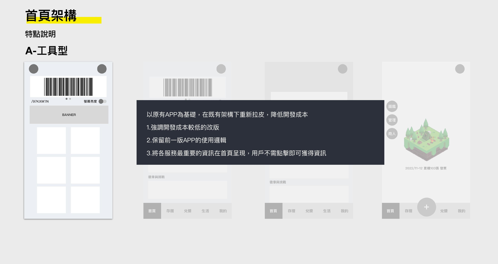
B・平台型
整合服務平台，透過點數與徽章增加 App 價值。將重點資訊、生活功能移往首頁，保留向下、向右繼續擴充的空間，並引入點數、勳章、任務系統，營造用戶蒐集發票時的成就感。
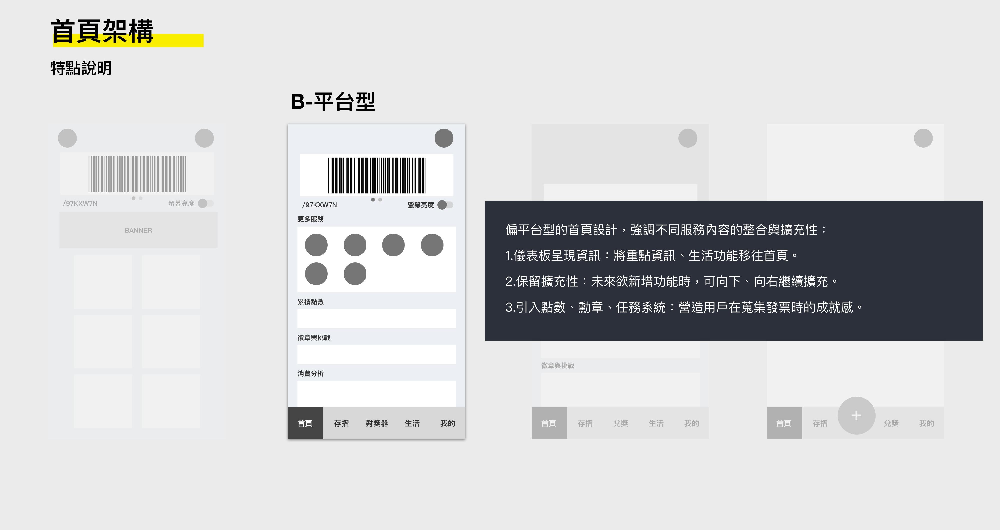
C・工具型（記帳導向）
以「記帳」為出發點，強調協助用戶快速完成任務，提升 App 實用性。考量未來功能結合至集團 App 的情境，只顯示用戶當下使用情境所需資訊，核心在於提升用戶記帳、收納發票的效率。
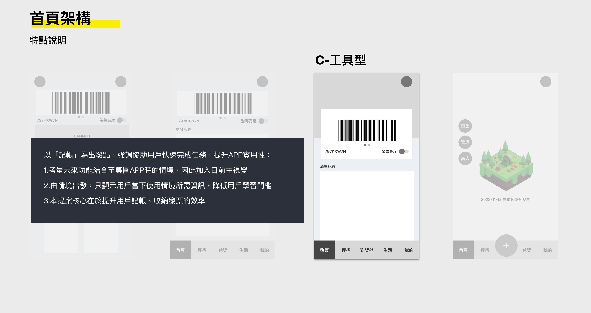
D・遊戲型
以遊戲化形式設計發票蒐集行為，吸引用戶高頻使用，並藉由遊戲內容達到社群連結的目的。透過蒐集、養成提升用戶黏著度，並利用佈置自己島嶼與拜訪朋友島嶼達成社交目的。
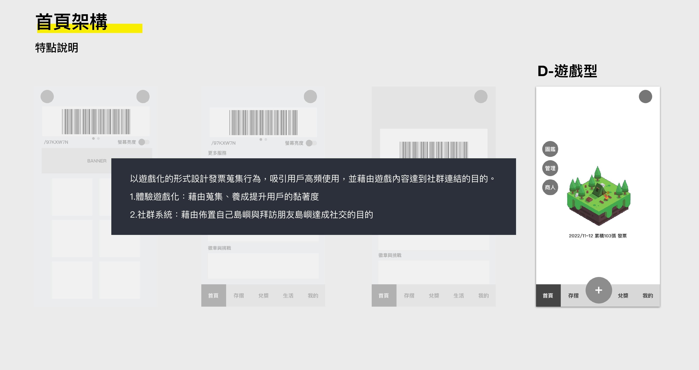
預計提出四款不同取向的視覺風格，但無論是何種風格，基礎架構與重點特色都是共用的，並預期在相同的限制下探索不同的可能性。
產品意象－關鍵字發想
本階段收錄產品的核心意象關鍵字，後續將依此發展出 4 款不同視覺取向的風格提案（風格 A／B／C／D），並在統一的核心重點下探索不同的可能性。主色調使用 #26D07C。
各提案共同重點
無論何種風格，均基於上述三項共同重點發展；下列關鍵字將分化為四組提案，於後續章節結合色彩計畫呈現。
意象關鍵字池
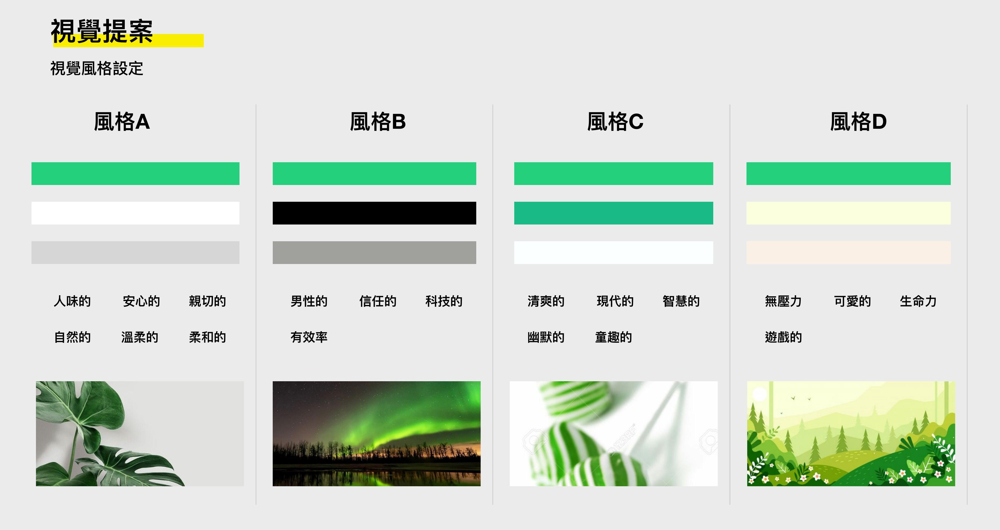
四款風格各自的色彩計畫與意象關鍵字，共同重點為資訊清楚、清楚易用、層級明確。
風格 A
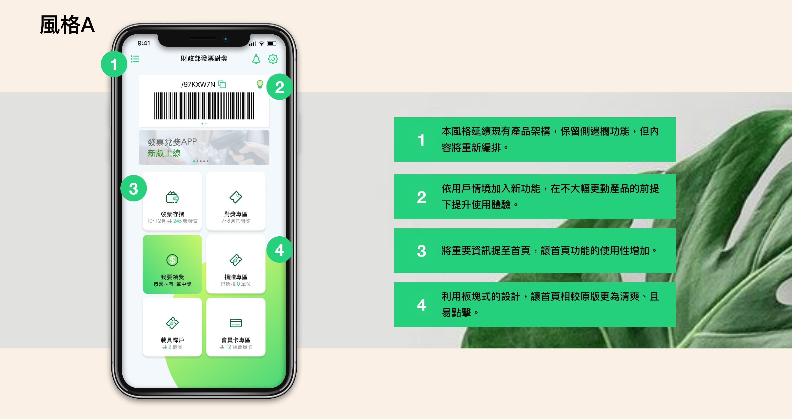
本風格延續現有產品架構，保留側邊欄功能，但內容重新編排。
依用戶情境加入新功能，在不大幅更動產品的前提下提升使用體驗。
將重要資訊提至首頁，讓首頁功能的使用性增加。
利用板塊式設計，讓首頁相較原版更為清爽、且易於點擊。
風格 B
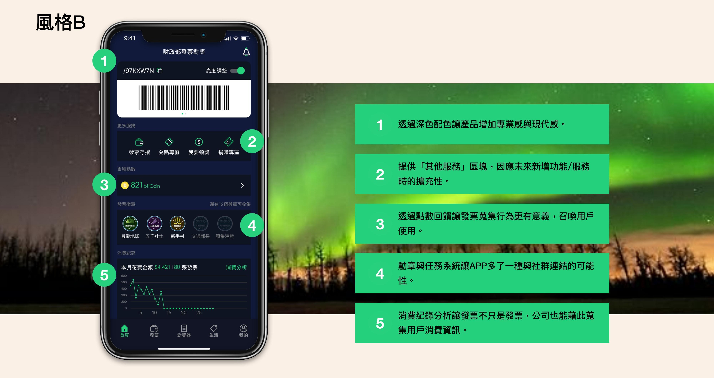
透過深色配色，讓產品增加專業感與現代感。
提供「其他服務」區塊，因應未來新增功能／服務時的擴充性。
透過點數回饋讓發票蒐集行為更有意義，召喚用戶使用。
勳章與任務系統讓 App 多了一種與社群連結的可能性。
消費紀錄分析讓發票不只是發票，公司也能藉此蒐集用戶消費資訊。
風格 C
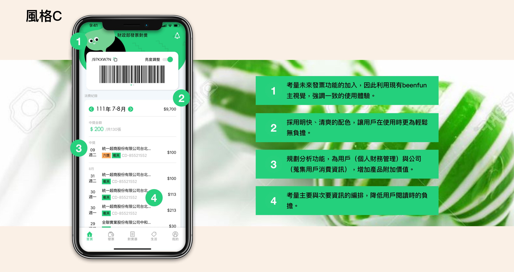
考量未來發票功能的加入，利用現有主視覺，強調一致的使用體驗。
採用明快、清爽的配色，讓用戶在使用時更為輕鬆無負擔。
規劃分析功能，為用戶（個人財務管理）與公司（蒐集用戶消費資訊）增加產品附加價值。
考量主要與次要資訊的編排，降低用戶閱讀時的負擔。
風格 D
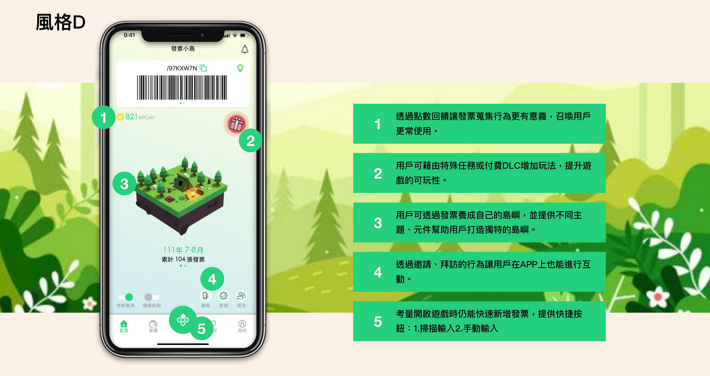
透過點數回饋讓發票蒐集行為更有意義，召喚用戶更常使用。
用戶可藉由特殊任務或付費 DLC 增加玩法，提升遊戲的可玩性。
用戶可透過發票養成自己的島嶼，並提供不同主題、元件打造獨特風貌。
透過邀請、拜訪的行為，讓用戶在 App 上也能進行互動。
考量開啟遊戲時仍能快速新增發票，提供掃描輸入、手動輸入快捷按鈕。
「蒐集發票」為目的性強烈的功能，用戶通常在刷完載具後便關閉 App，甚至不開啟 App 直接用 widget 掃描完成任務，較難如同真正的社群工具具有召喚能力。從資料蒐集與競品參考出發，本提案仍提供三種能與社群功能產生連結的方式。
利用點數、完成任務、勳章蒐集的形式，讓用戶可以透過轉點或分享的行為與朋友圈連結。
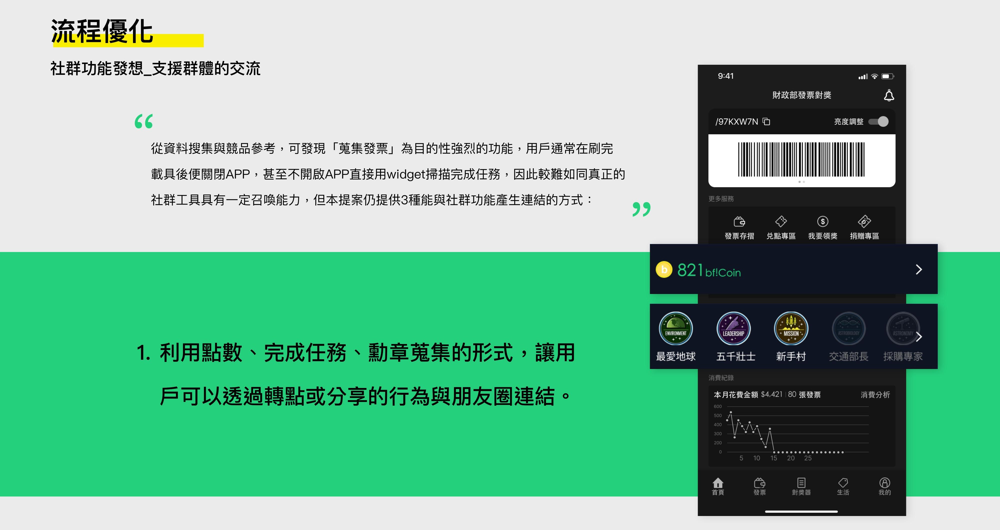
利用發票資訊，建立該店家的評價＆評論系統，不同用戶可以透過該系統留下訊息，且因為要有發票才能評論，因此能提升評價真實性。
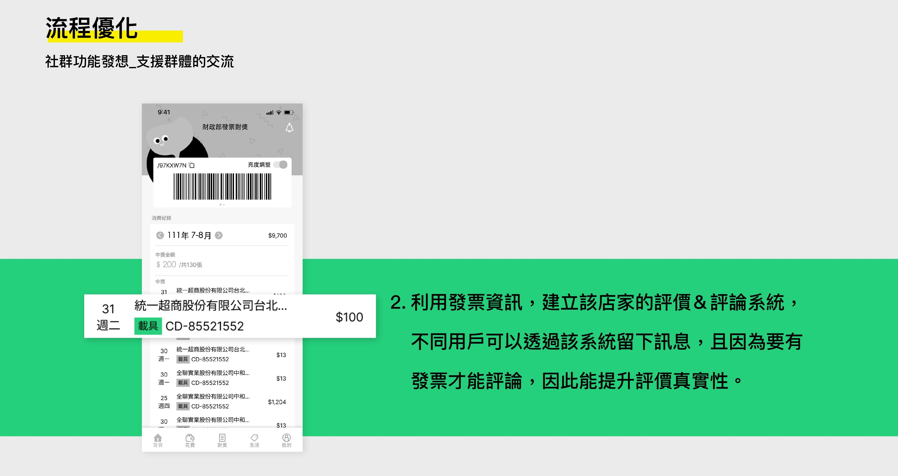
以遊戲化來轉化蒐集發票的行為，賦予日常行為的有趣性與意義。用戶透過蒐集發票逐步建立起自己的島嶼，並透過邀請、拜訪的形式與社群完成互動的行為。
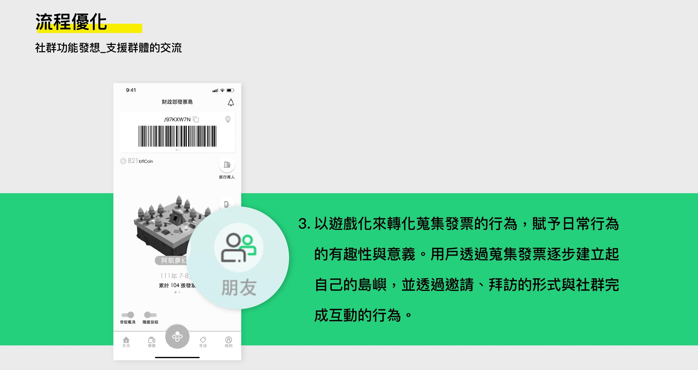
重新梳理後三碼對獎的資訊架構，讓 Call to action 更加明確，並提供「炫耀」功能增加用戶的社交可能性。
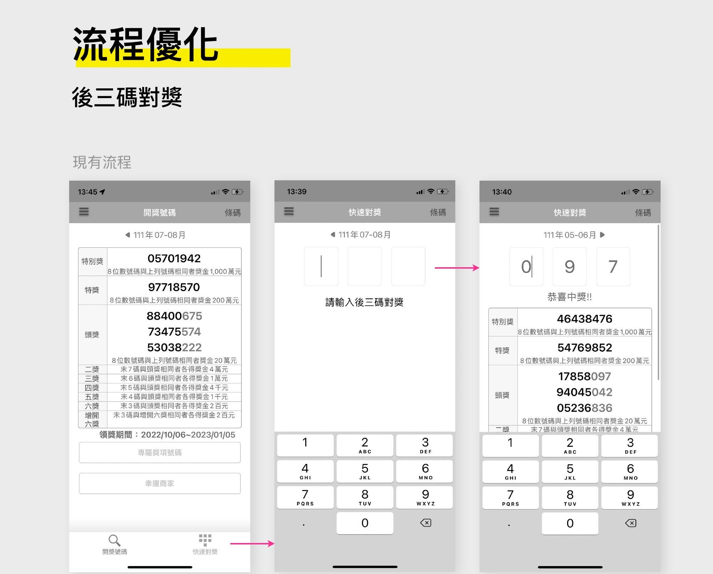
現有流程，資訊量過多且 Call to action 不明確，操作動線混亂。
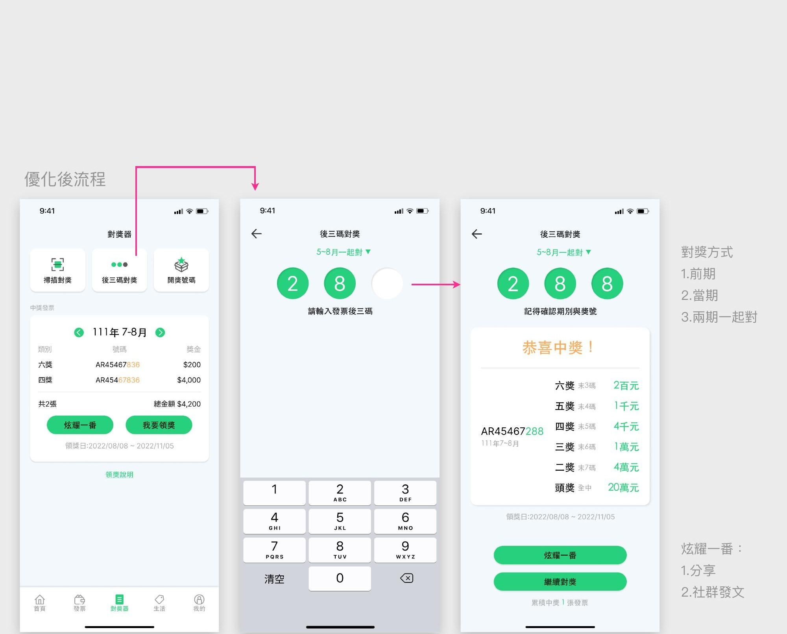
優化後流程，支援前期、當期、兩期一起對三種對獎方式，並提供炫耀一番的分享功能。
現有流程資訊量過多、Call to action 不明確、相關功能也未整合，操作動線因此顯得混亂。優化後重新梳理資訊架構，明確區分功能與資訊，並讓用戶能清楚知道下一步該做什麼；同時依用戶情境將不重要的資訊收合在下一層，並提供「炫耀」功能，增加用戶的社交可能性。
重新梳理發票存摺頁面的資訊結構，提升易讀性，並新增消費分析功能協助用戶整理帳務。
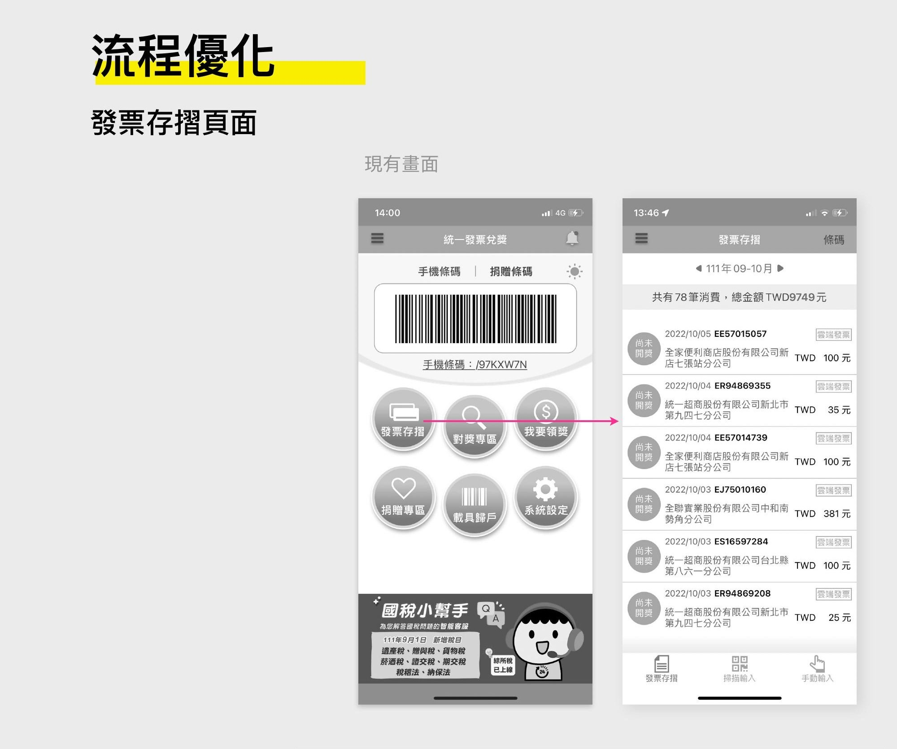
現有畫面，左上方導覽列與發票列表混雜，資訊不易閱讀。
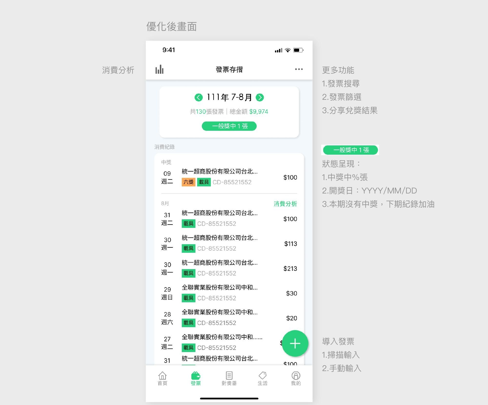
優化後畫面，新增消費分析入口，並將掃描輸入、手動輸入收納至右下角「+」按鈕中。
現有畫面的左上方導覽列容易造成用戶操作失誤，發票列表也未經整理、功能與資訊區塊混雜，用戶不易理解。優化後將重點放在資訊呈現，重新梳理資訊結構、提升易讀性，並新增「消費分析」功能協助用戶整理帳務；同時把「掃描輸入」「手動輸入」收納至右下角「+」中，在提升操作體驗的同時不影響原本架構。
重點畫面總覽
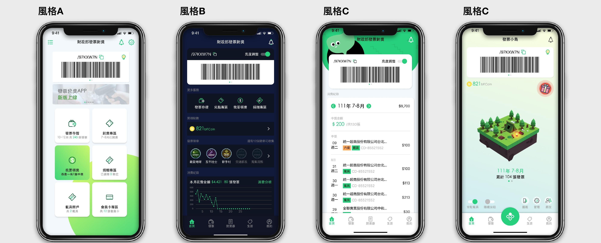